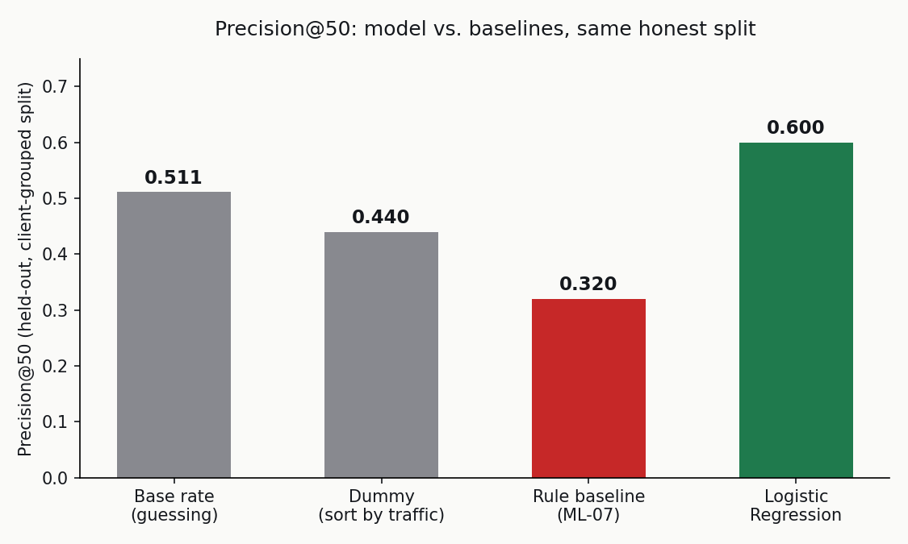
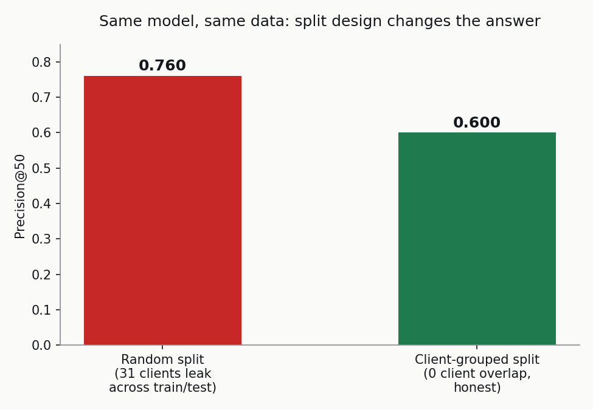
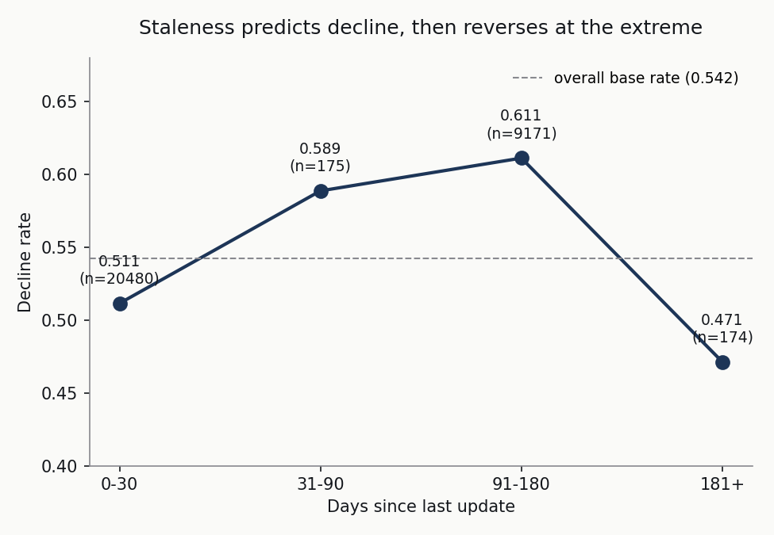

Content teams managing large catalogs cannot review every page every week, so the question this paper addresses is which pages to prioritize for refresh given roughly 50 review slots. Using a 30,000-row sample of anonymized content performance data across 32 clients, a leakage-audited feature set and a client-grouped validation split, a logistic regression model reaches 0.600 precision@50 against a base rate of 0.511 and a hand-written rule baseline of 0.320 on the identical held-out set. A companion signal audit shows that content staleness, the intuitive basis for most refresh heuristics, predicts decline only over part of its range and reverses at the extreme, which is offered as the concrete reason a simple rule underperforms here. The paper also surfaces an open methodology question about a higher precision figure reported elsewhere on the same dataset, without resolving it, since the validation-design details behind that figure were not available to check directly.
A content team with thousands of live pages cannot manually review all of them for whether they still serve the reader and the client well. Some pages quietly decline: search visibility slips, traffic drops, and nobody notices until a client asks why. Reviewing content is expensive, an editor's realistic capacity is on the order of fifty pages a week, so the practical question isn't "is this page declining," it's "which fifty pages should get attention first."
This paper works through that question end to end: framing it as a task, building and rejecting a hand-written rule with evidence rather than intuition, auditing the dataset's own assumptions, building a leakage-safe model, validating it honestly, and turning the result into a reviewable action queue, not a black box.
This paper uses the starter/sample release, data/raw/content_refresh_anonymized.csv: 30,000 rows, 32 pseudonymized clients, 44 columns of SEO and engagement metrics per content item. The label, trend_direction, compares each page's trailing 30-day performance against the 30 days before that, an observed outcome, not a rule someone wrote by hand.
fact_content_daily_performance table (11.69M rows for one sample month, accessed via a gated Hugging Face connection) surfaced real data-quality findings, duplicate rows for one client on one date, and a documented availability-flag mechanism gating which columns are genuinely measured. Those findings are referenced in the Methodology and Limitations sections below, but the model itself was neither trained nor validated on the warehouse directly.
Excluded, and why: identifiers (content_id, client_id, used only for grouping); trend_direction/trend_pct (these define the label); avg_position, ctr, and every 90-day or last-30-day traffic aggregate (window-overlap leakage risk, detailed in Methodology).
Framed as ranking/scoring built on a binary classification target (is_declining_label), evaluated by precision@50, because the deliverable an editor actually uses is an ordered queue, not a per-page yes/no.
The feature set was not assembled by including everything plausible, several of the most obviously useful-looking columns, avg_position and ctr chief among them, were excluded after a measured audit found they carry real window-overlap risk: their _last_30d sub-windows correlated consistently harder with the label than _prev_30d sub-windows of the same metrics, and neither avg_position nor ctr has a safe prev-30d-only version in this dataset. A confession test confirmed the audit process itself works: deliberately re-adding the label-derived trend_pct pushed AUC from an honest 0.642 to 1.000; removing it recovered the honest number.
The baseline is a rule a human editor would plausibly write by hand: flag pages that are visible (impressions ≥ 500), stale (90+ days since last update), and poorly ranked (position ≥ 15), then prioritize by impression volume. Not a strawman, a genuinely reasonable first attempt.
Split by client_id using a grouped shuffle split, zero client overlap between train and test confirmed by count, not assumed. This choice is evidence-based: an earlier random split on this same task showed 31 overlapping clients between train and test and a 0.093 AUC gap versus a genuinely grouped split, real evidence of client-memorization risk on this dataset.
Every number below is computed on the identical held-out, client-grouped test set (6,163 rows, 0 client overlap with training).
| Method | Precision@50 |
|---|---|
| Base rate (guessing) | 0.511 |
| Dummy (sort by prior impressions) | 0.440 |
| Rule baseline (hand-written) | 0.320 |
| Random Forest | 0.480 |
| Logistic Regression (final) | 0.600 |

Two results are worth naming plainly rather than smoothing over. First, the simpler model won: Logistic Regression outperformed Random Forest on this task, reported as found rather than tuned until Random Forest looked better. Second, the hand-written rule baseline, despite being a reasonable first attempt, scored below the base rate, evidence that this problem needs a model precisely because no simple rule captures it.
The same Logistic Regression model, same features, scored under a naive random split (which allows client overlap) reports 0.760 precision@50, a full 0.160 higher than the honestly-validated 0.600.

outputs/model_report.md) claims 0.740 precision@50 on a split it labels "client_holdout," without publishing a client-overlap count. That claimed figure sits suspiciously close to this paper's own leaky random-split number (0.760), and far from the genuinely grouped number (0.600). This paper cannot prove that reference figure was computed on an overlapping split, only that reproducing this exact task under a leaky split produces a very similar-looking number. The honest position is to flag it as worth checking, not to either dismiss it or accept it uncritically.
A signal audit tested the core assumption behind most refresh heuristics directly: does staleness predict decline?

Decline rate rises from 51.1% (0-30 days since update) to 61.1% (91-180 days), consistent with "staler pages decline more." But it reverses at 181+ days (47.1%, the lowest of all buckets, n=174, above this audit's own reliability floor). Staleness alone is not a safe universal proxy, which is precisely why the rule baseline in Section 4 underperforms and a model that can weigh many weak, tangled signals together is justified.
The action playbook scores the same held-out set validated above and adds a plain-language reason and a confidence tier to every row, so an editor sees why a page was flagged, not just a number.
| Rank | Score | Confidence | Reason |
|---|---|---|---|
| 1 | 0.843 | high | falls in the 31-90-day freshness bracket |
| 2 | 0.837 | high | low prior search visibility |
| 3 | 0.835 | high | falls in the 31-90-day freshness bracket |
| 4 | 0.834 | high | falls in the 31-90-day freshness bracket |
| 5 | 0.833 | high | falls in the 31-90-day freshness bracket |
Full ranked queue (6,163 rows): work/outputs/action_playbook_queue.csv in the repository.
avg_position/ctr becoming leakage-safe available, or a quarterly calendar floor regardless.Every number in this paper is computed live in the linked notebooks; re-running them reproduces this paper's tables and figures exactly.
Built on the FlyRank ML Internship dataset. Learn more at flyrank.ai.